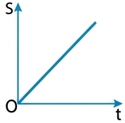
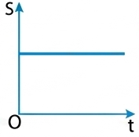
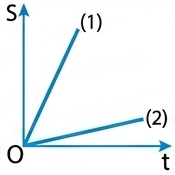
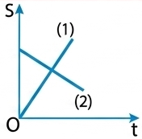
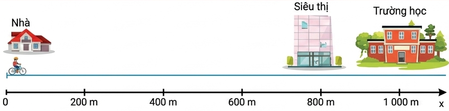
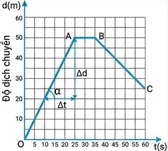
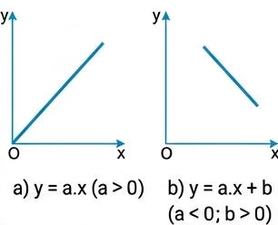
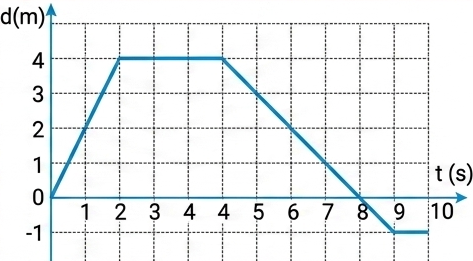

Hãy nhớ lại kiến thức đã học về đồ thị của chuyển động trong môn Khoa học tự nhiên 7 để phát hiện ra tính chất của các chuyển động thẳng có đồ thị mô tả ở những hình sau.

a)

b)

c)

d)
Chuyển động thẳng là chuyển động thường gặp trong đời sống, có quỹ đạo chuyển động là đường thẳng.
Dựa vào công thức ta có thể xác định được quãng đường đi được, độ dịch chuyển, tốc độ và vận tốc của chuyển động.
Câu hỏi:
Hãy tính quãng đường đi được, độ dịch chuyển, tốc độ, vận tốc của bạn A khi đi từ nhà đến trường và khi đi từ trường đến siêu thị (Hình 7.1). Coi chuyển động của bạn A là chuyển động đều và biết cứ 100 m bạn A đi hết 25 s.

Hình 7.1
Lời giải:
Vì cứ 100 m bạn A đi hết 25 s nên tốc độ của bạn A luôn là: \( \frac{100}{25} = 4 \text{ m/s} \).
Đồ thị độ dịch chuyển - thời gian của một chuyển động không những cho phép mô tả được chuyển động, mà còn có thể cho biết nhiều thông tin khác nữa về chuyển động.
Đồ thị đơn giản nhất là đồ thị độ dịch chuyển - thời gian của chuyển động thẳng đều. Trong chuyển động thẳng đều thì \( d = v.t \) (với \(v\) là một hằng số). Biểu thức này có dạng giống biểu thức của hàm số \( y = ax \) đã học trong môn Toán nên có đường biểu diễn là một đoạn thẳng.
Hoạt động:
Hãy vẽ đồ thị độ dịch chuyển – thời gian trong chuyển động của bạn A nêu ở trên theo trình tự sau đây:
1. Vẽ bảng ghi số liệu vào vở.
| Độ dịch chuyển (m) | 0 | 200 | 400 | 600 | 800 | 1000 | 800 |
|---|---|---|---|---|---|---|---|
| Thời gian (s) | 0 | 50 | 100 | 150 | 200 | 250 | 300 |
2. Vẽ đồ thị: trên trục tung (trục độ dịch chuyển) 1 cm ứng với 200 m; trên trục hoành (trục thời gian) 1 cm ứng với 50 s.
Học sinh tiến hành vẽ hệ trục tọa độ \(Od\) và \(Ot\). Đánh dấu các điểm có tọa độ \( (t, d) \) tương ứng từ bảng số liệu: \( (0,0); (50, 200); (100, 400)... (250, 1000); (300, 800) \). Nối các điểm lại sẽ được đồ thị gồm hai đoạn thẳng (đoạn 1 dốc lên, đoạn 2 dốc xuống).
Hình 7.2 là đồ thị độ dịch chuyển – thời gian của một người đang bơi trong một bể bơi dài 50 m. Đồ thị này cho biết những gì về chuyển động của người đó?

Hình 7.2
1. Đồ thị của các hàm số đã học trong môn Toán:
a) \( y = ax \ (a>0) \)
b) \( y = ax + b \ (a<0; b>0) \)

2. Khi vật chuyển động thẳng với vận tốc không đổi \( v > 0 \) thì \( d = v.t \). Có dạng hàm số \( y = ax \).
3. Khi vật đang chuyển động thẳng, theo chiều dương, nếu đổi chiều thì quãng đường dương còn độ dịch chuyển âm.
Từ đồ thị độ dịch chuyển - thời gian có thể dễ dàng tính được giá trị của vận tốc.
Trong đồ thị vẽ ở Hình 7.2, hệ số góc (độ dốc) của đường biểu diễn OA là:
Đây chính là độ lớn vận tốc của người bơi trong 50 m đầu.
Bài 1:
Số liệu về độ dịch chuyển và thời gian của chuyển động thẳng của một xe ô tô đồ chơi chạy bằng pin được ghi trong bảng bên. Dựa vào bảng này để:
a) Vẽ đồ thị.
b) Mô tả chuyển động.
c) Tính vận tốc trong 3 s đầu.
| Độ dịch chuyển (m) | 1 | 3 | 5 | 7 | 7 | 7 |
| Thời gian (s) | 0 | 1 | 2 | 3 | 4 | 5 |
a) Học sinh tự vẽ đồ thị dựa vào các tọa độ (0;1), (1;3), (2;5), (3;7), (4;7), (5;7).
b) Mô tả: Từ giây 0 đến giây 3, xe chuyển động thẳng đều theo chiều dương. Từ giây 3 đến giây 5, xe đứng yên tại vị trí có độ dịch chuyển 7m.
c) Vận tốc trong 3s đầu: \( v = \frac{\Delta d}{\Delta t} = \frac{7 - 1}{3 - 0} = \frac{6}{3} = 2 \text{ m/s} \).
Bài 2:
Đồ thị độ dịch chuyển - thời gian trong chuyển động thẳng của một xe ô tô đồ chơi điều khiển từ xa được vẽ ở Hình 7.4.

Hình 7.4
Câu 1: Đồ thị độ dịch chuyển - thời gian của một vật chuyển động thẳng đều là:
Câu 2: Độ dốc (hệ số góc) của đồ thị độ dịch chuyển - thời gian biểu diễn đại lượng nào?
Câu 3: Nếu đoạn đồ thị độ dịch chuyển - thời gian nằm ngang (song song trục thời gian) thì vật đang:
Câu 4: Khi vật chuyển động thẳng, không đổi chiều thì:
Câu 5: Trong đồ thị \(d-t\), khi đường biểu diễn dốc xuống (hướng về trục hoành) thì:
Bài 1:
Một xe máy đi thẳng đều với vận tốc 40 km/h trong thời gian 2 giờ từ nhà. Hãy tính độ dịch chuyển và vẽ phác họa đồ thị \( d-t \) của chuyển động này.
- Vì xe đi thẳng đều một chiều nên độ dịch chuyển: \( d = v.t = 40 \times 2 = 80 \text{ km} \).
- Vẽ đồ thị: Hệ trục vuông góc, trục tung là d (km), trục hoành là t (h). Nối điểm gốc tọa độ \( (0,0) \) với điểm có tọa độ \( (t=2, d=80) \) ta được đoạn thẳng biểu diễn.
Bài 2:
Một vật chuyển động có đồ thị \(d-t\) gồm 2 giai đoạn: Giai đoạn 1 từ \( (t=0, d=0) \) đến \( (t=2\text{s}, d=10\text{m}) \). Giai đoạn 2 từ \( (t=2\text{s}, d=10\text{m}) \) đến \( (t=5\text{s}, d=10\text{m}) \). Tính vận tốc của vật trong từng giai đoạn.
- Giai đoạn 1 (0 đến 2s): \( v_1 = \frac{10 - 0}{2 - 0} = 5 \text{ m/s} \).
- Giai đoạn 2 (2 đến 5s): Độ dịch chuyển không đổi (nằm ngang), \( v_2 = \frac{10 - 10}{5 - 2} = 0 \text{ m/s} \) (vật đứng yên).
Bài 3:
Một người chạy thẳng từ điểm A đến điểm B cách nhau 50m hết 10s, sau đó lập tức chạy ngược về điểm A hết 15s. Tính vận tốc trung bình và tốc độ trung bình của người đó cho cả quá trình chạy.
- Quãng đường đi được: \( s = 50 + 50 = 100 \text{ m} \).
- Độ dịch chuyển tổng cộng: Vì điểm cuối trùng điểm đầu nên \( d = 0 \text{ m} \).
- Tổng thời gian: \( t = 10 + 15 = 25 \text{ s} \).
- Tốc độ trung bình: \( = \frac{s}{t} = \frac{100}{25} = 4 \text{ m/s} \).
- Vận tốc trung bình: \( = \frac{d}{t} = \frac{0}{25} = 0 \text{ m/s} \).